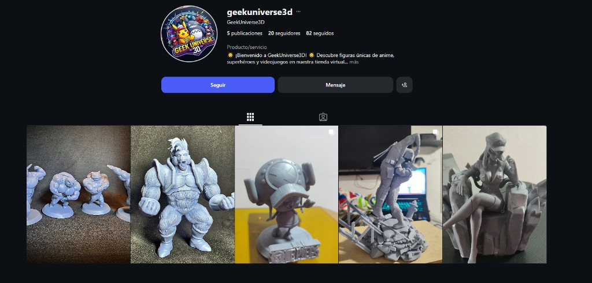
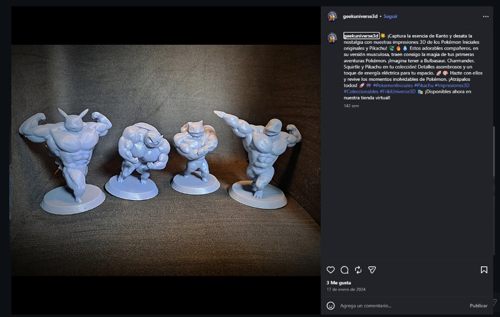

Exportar a PDF: Ctrl+P → Impresora «Guardar como PDF» → márgenes predeterminados → activar «Gráficos de fondo» si las imágenes no se ven → Guardar como AmayaGil_Propuesta_Ecommerce.pdf
Institución Universitaria Agustiniana (Uni Agustiniana)
Comercio electrónico (E-commerce) — Unidades 1 y 2
Propuesta de comercialización de un producto por medio de una red social
Alonso Esteban Amaya Gil
José Vicente Barreto Hernández
11 de octubre de 2026
La comercialización por plataformas digitales permite a organizaciones y emprendimientos ampliar cobertura, reducir costos de intermediación y dialogar directamente con clientes (Kotler y Keller, 2016). En este contexto, las redes sociales dejaron de ser espacios únicamente informativos y pasaron a funcionar como canales de social commerce, en los que el contenido visual, las demostraciones del proceso productivo y la interacción con la audiencia influyen en la decisión de compra (Statista, 2024).
El presente documento presenta una propuesta de e-commerce para comercializar productos de impresión 3D mediante Instagram, bajo el emprendimiento Geek Universe 3D (usuario @geekuniverse3d), perfil activo orientado a figuras de anime, superhéroes y videojuegos. Instagram concentra públicos interesados en cultura geek, coleccionismo y personalización, y ofrece herramientas para negocios (cuenta profesional, estadísticas y mensajes directos) (Instagram, 2024).
El objetivo es describir la selección del canal, la configuración del perfil, la imagen de marca del emprendimiento y la presentación de un producto real, relacionando estos elementos con los conceptos de las unidades 1 y 2: comercio electrónico, marketing digital y estrategia de canales en entornos digitales.
| Criterio | TikTok | ||
|---|---|---|---|
| Visualización del producto impreso | Alto (fotos, carruseles, Reels) | Medio | Alto (video corto) |
| Público 15–40 años (hobbies, coleccionismo) | Muy presente | Amplio | Creciente |
| Pedidos y cotizaciones | MD, enlace en bio | Messenger, Marketplace | MD y enlaces |
| Costo inicial | Bajo (orgánico) | Bajo | Bajo |
Decisión: Se selecciona Instagram porque las figuras impresas se comercializan mejor cuando el cliente aprecia detalle, escala y acabado en imágenes de calidad. El perfil del emprendimiento ya existe en esta red, lo que permite documentar una propuesta auténtica (Laudon y Traver, 2021).
Camila, 24 años, fan de anime y videojuegos, busca coleccionables diferenciados (Pokémon, One Piece) sin depender de importaciones costosas. Descubre marcas en Instagram y compra tras evaluar fotos y contacto por mensaje directo. Su principal duda es la calidad del acabado; el emprendimiento responde con fotografías detalladas y atención personalizada.
El perfil Geek Universe 3D está creado en Instagram con categoría Producto/servicio, nombre comercial GeekUniverse3D y usuario @geekuniverse3d. Al momento de la evidencia registra 5 publicaciones, 20 seguidores y 82 cuentas seguidas. Los botones Seguir y Mensaje facilitan el contacto comercial.
URL del perfil: https://www.instagram.com/geekuniverse3d/

Centralizar la vitrina en Instagram coherencia la marca geek con un canal visual. La cuenta profesional permite consultar alcance e interacciones por publicación (Instagram, 2024).
La identidad digital comunica coleccionables de impresión 3D y enlace a tienda virtual (Kotler y Keller, 2016).
| Elemento | Aplicación |
|---|---|
| Nombre comercial | Geek Universe 3D |
| Enfoque | Figuras de anime, superhéroes y videojuegos |
| Foto de perfil | Logo circular «Geek Universe 3D» con personajes de cultura pop |
| Feed | Grid con Pokémon, One Piece (Chopper) y escenas de acción |
| Bio | Bienvenida a GeekUniverse3D; figuras únicas; tienda virtual |
Bio visible: «¡Bienvenido a GeekUniverse3D! Descubre figuras únicas de anime, superhéroes y videojuegos en nuestra tienda virtual…»
Set de figuras 3D Pokémon iniciales de Kanto y Pikachu (versión musculosa / coleccionable), impresas en material de color lila, sobre bases circulares.
| Atributo | Detalle |
|---|---|
| Piezas | Bulbasaur, Charmander, Squirtle y Pikachu |
| Valor | Nostalgia Pokémon y pieza de exhibición |
| Disponibilidad | Publicación remite a tienda virtual |
| Canal | Instagram + tienda virtual / mensaje directo |
| Fecha publicación | 17 de enero de 2024 |
Extracto del copy: «Captura la esencia de Kanto y desata la nostalgia con nuestras impresiones 3D de los Pokémon iniciales originales y Pikachu… en su versión musculosa… Disponibles ya en nuestra tienda virtual.» Hashtags: #PokemonIniciales, #Pikachu, #3DPrints, #Collectibles, #GeekUniverse3D.

Modelo híbrido: Instagram como vitrina emocional (fandom, nostalgia) y tienda virtual para conversión, alineado con social commerce y e-commerce ligero (Laudon y Traver, 2021).
Alcance e interacciones por publicación; consultas por mensaje directo; tráfico hacia la tienda virtual.
Instagram + perfil Geek Universe 3D + producto ancla Pokémon iniciales + CTA hacia tienda virtual constituyen una propuesta coherente de comercialización digital de bajo costo fijo.
Geek Universe 3D demuestra que una red social permite posicionar un nicho geek y conectar con coleccionistas mediante contenido visual y narrativa de nostalgia. La actividad articula conceptos de e-commerce con evidencia real (URL y capturas). Como mejora, aumentar frecuencia de publicaciones y explicitar precios en tienda o leyendas. En conjunto, se cumple el objetivo formativo de la propuesta de comercialización por red social.
Chaffey, D., & Ellis-Chadwick, F. (2022). Digital marketing (8th ed.). Pearson.
Instagram. (2024). Tips and resources to help you grow your business on Instagram. Meta Platforms. https://business.instagram.com/
Kotler, P., & Keller, K. L. (2016). Dirección de marketing (15.ª ed.). Pearson Educación.
Laudon, K. C., & Traver, C. G. (2021). E-commerce 2021: Business, technology, and society (16th ed.). Pearson.
Statista. (2024). Social commerce – Statistics & facts. https://www.statista.com/topics/8783/social-commerce/